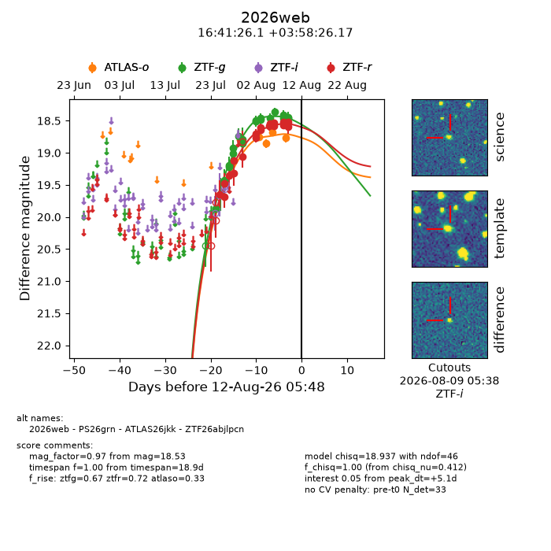
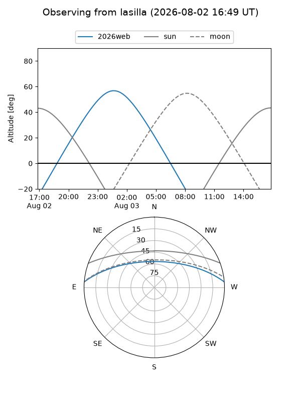
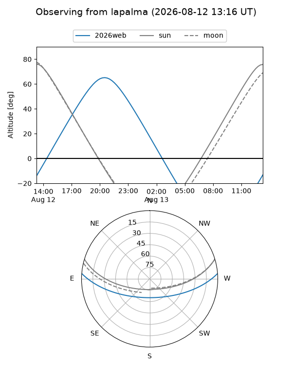
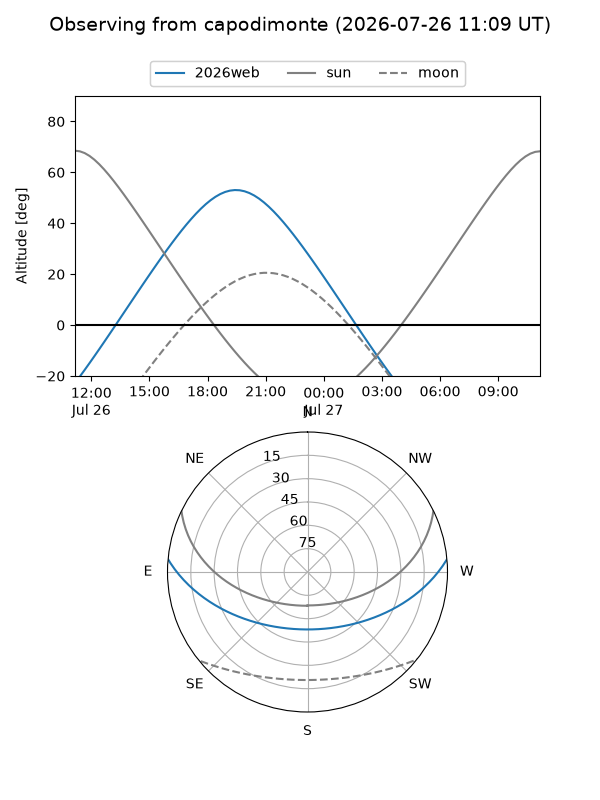
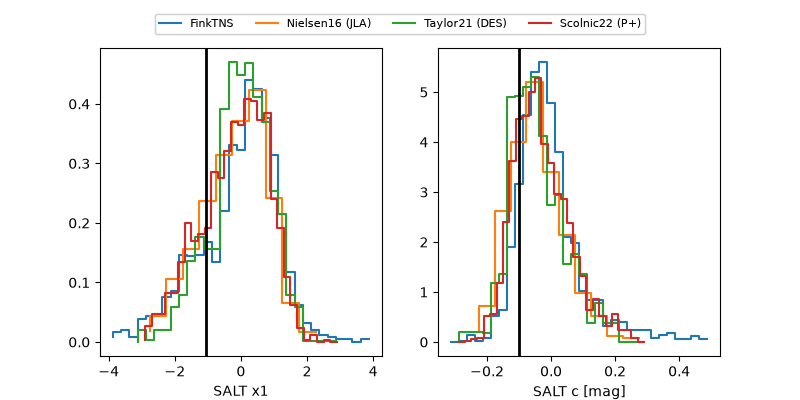

2026web
Target 2026web at 2026-08-12 05:51
Aliases and brokers:
FINK-ZTF: ztf.fink-portal.org/ZTF26abjlpcn
Lasair-ZTF: lasair-ztf.lsst.ac.uk/objects/ZTF26abjlpcn
ALeRCE-ZTF: alerce.online/object/ZTF26abjlpcn
YSE-PZ: ziggy.ucolick.org/yse/transient_detail/2026web
TNS name: wis-tns.org/object/2026web
Direct TNS query: direct search
alt names
ZTF26abjlpcn (ztf,fink_ztf)
2026web (tns,yse)
ATLAS26jkk (atlas)
PS26grn (panstarrs)
Coordinates:
equatorial (ra, dec) = 250.3587,+3.97394
equatorial (HMS+DMS) = 16:41:26.09,+03:58:26.17
galactic (l, b) = (20.6780,+30.57403)
Flags:
TNS type: nan
peak dt: +5.1
Photometry:
last atlaso=18.77, ztfg=18.45, ztfr=18.53
4 atlaso, 19 ztfg, 19 ztfr detections
Lightcurve

Visibility



Additional plots
